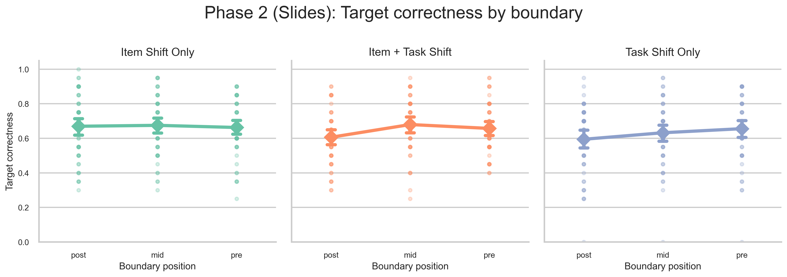
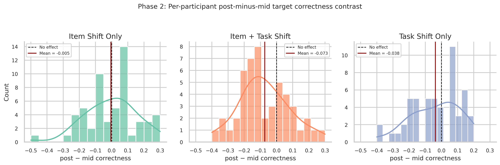
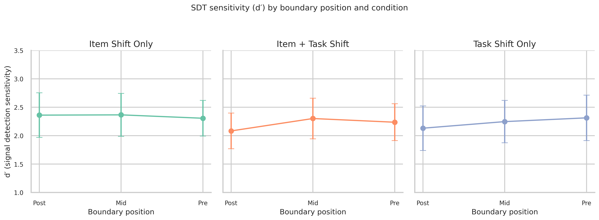
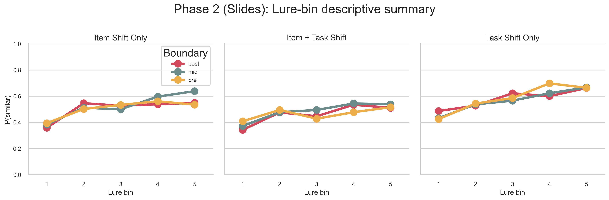

In Phase 2 we moved from exploratory summaries to confirmatory modelling of test-phase correctness, response speed, and response-category behaviour. Three code-level bugs were corrected and nine analyses added. The clearest result is a post-boundary recognition cost in Item + Task Shift, confirmed by Friedman χ²(2)=11.47, p=.003, W=0.117; Holm-corrected dz=−0.477, p=.020; and SDT d' dz=−0.473, p=.016. Response decomposition shows general trace weakening; encoding RT did not predict test correctness; pre-boundary lure FA elevation (dz=+0.381) supports a familiarity-based reinterpretation of the LDI non-replication (observed contrast=−0.031, wrong direction).
Dataset: MST data, IIIT Hyderabad SP 2026. Conditions: Item Shift Only (n=56), Item + Task Shift (n=49), Task Shift Only (n=53); 150 test trials each. Positions: post (crossed boundary), mid (within event), pre (before boundary).
Prior work: Zacks & Swallow (2007) and Swallow et al. (2009) showed event boundaries impair memory encoding. Morse et al. (2023) predicted a pre-boundary LDI advantage via hippocampal pattern separation — we re-examine this. Phase 1 found task-rule boundaries slow encoding RT dramatically (Fig. 1), motivating Phase 2.
H₁: Post-boundary targets show lower recognition than mid/pre when both item and task rule shift simultaneously.
H₁ confirmed: ANOVA — Item + Task Shift: F(2,96)=6.45, p=.002; Item Shift Only: F(2,110)=0.21, p=.814; Task Shift Only: F(2,104)=4.62, p=.012. Both parametric and nonparametric tests agree only for Item + Task Shift. Per-participant contrast distribution (Fig. 3) shows the effect is consistent across individuals — mean post−mid=−0.073.




Future work: (1) Test boundary cost in fMRI hippocampal data. (2) Examine Objects-vs-Scenes × boundary with larger samples.